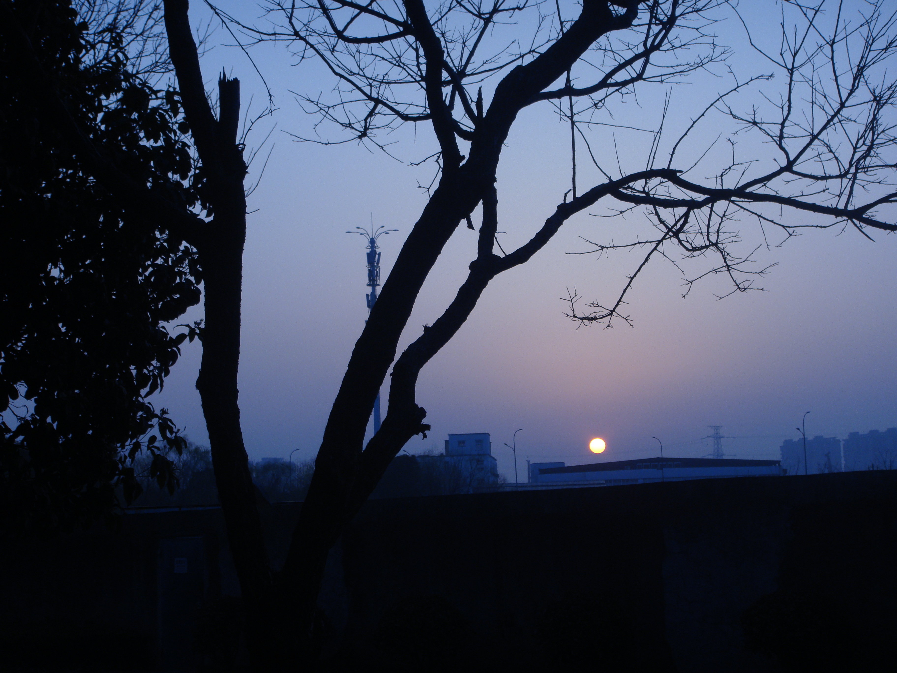

活下去了
2023.3.5
我只是觉得那个人确实很伤心：干燥的春日的晚上，躺倒在过道里：我原以为他遇到了生理上的问题，没有想过是有心理问题找着了他。
在一阵灯光闪烁之后，他消失不见了。第二天我才知道更多细节，并觉得悲伤。不过世界还在继续运行，笑声仍然要回荡的。我感觉到一些熟悉的感受：上次是在得知schy去世的时候，我坐在车上盯着江面，然后去做核酸。
或许有个谁会用悲伤自居，因为能感到点与周围人不同的情感便要觉得独特，又或者愈发孤独。要是“悲伤”或者“孤独”可以换钱，或许另一群人早早地成了人民富豪，毕竟他们的孤独和独特是拿来给别人和自己看的。
倘若清醒的阵痛成了灵感的源泉，大抵创作都是苦的。倒不如说，足够苦的人做事总是苦的。
有些热爱文学创作的人意识到自己有重构过去、解除痛苦的可能性，但他故意不这样，死抓着自己的痛苦不放，以这种痛苦为荣，美其名曰这是文学创作所必须的东西。这种心态算不算一种自恋（陷入沉思）（我有一个朋友系列）
还有些人虽然嘴上不说，但觉得自己有这种痛苦就是高人一等，是区别于普通人和“我”的高级的勋章，用来显示自己的特别，显示这种痛苦让自己“得道”的可能性比“普通人”高（哈哈哈哈真的好好笑，这就是高二时的我）评论出处
这世界上有那么多十字路口，我总是要站在十字路口。
有点儿像做“电车难题”，不管再怎么跳脱也是被锁死的：结果总是不尽人意，一旦做出选择便会将你置于罪恶，过错的低地。我需要做出选择，但不管怎么选择，总会有一个世界霎然被抹除了，一条路迷失了，一个人、也许有很多人离开了。另外，需要时时刻刻接受不会有的审判。
不该想这种问题吧？这种想法没有前进吧？我缺乏最基本的素养。值得庆幸的是，我还有点儿时间；并于是大把地挥霍起来。
对于可能有问题的朋友：你没有办法做到最好。但若是你能尽了力；那么没有做到的，便是绝对做不到的了。
我的第三条准则是：永远只求克服自己，不求克服命运，只求改变自己的愿望，不求改变世间的秩序。总之，要始终相信：除了我们自己的思想以外，没有一样事情可以完全由我们做主。所以，我们对自身以外的事情尽了全力之后，凡是没有办到的，对于我们来说，就是绝对办不到的事情。我觉得明白了这一点就可以消除痴心妄想，凡是得不到的东西就不要盼望将来把它弄到手；这样也就安分守己、心满意足了。因为我的意志所能要求的，本来只是我的理智认为大致可以办到的事情，如果我们把身外之物一律看成由不得我们自己做主的东西，那么，在平白无故地被削除封邑的时候，就绝不会因为丧失那份应当分封给我这位贵族的采地而懊恼，就像不会因为没有当上中国皇帝或墨西哥国王而懊恼一样；推而广之，生了病也就不会妄想健康，坐了牢也就不会妄想自由，就像不会妄想生成金刚不坏之身、长出高飞远翥的翅膀一样。不过我也承认，一定要经过长期训练，反复思考，才能熟练地从这个角度去看万事万物。我相信，那些古代哲学家之所以能够摆脱命运的干扰， 漠视痛苦和贫困，安乐赛过神仙，其秘密主要就在于此。因为他们不断地考察自然给他们划定的界限，终于大彻大悟，确信除了自己的思想之外，没有一样东西可以由他们做主，确信只要认清这一点就可以心无挂碍，不为外物所动；他们对自己的思想作出了绝对的支配，因此也就有理由认为自己又富又强，逍遥安乐，胜过所有的别人，别人不懂这种哲学，不管得到自然和命运多大优待，还是不能支配一切、事事如愿以偿的。
选自笛卡尔《谈谈正确运用自己的理性在各门学问里寻求真理的方法》（DISCOURS DE LA MÉTHODE pour bien conduire sa raison et chercher la vérité dans les sciences ）；商务印书馆；第三部分。
我可能还说出过很多错话
写下这几笔时，感到头皮发麻，手头冰冷，心在颤抖。
2023.3.3 20:22
头脑发热
2023.3.3 20:33
再说一下恐惧的东西。
我又意识到：我只是在表现自己，当一个虚伪的，骄傲的孩子。或许现在不表现自己我会活不下去但这不是我想要的，也不应该是我想要的。
倒退
或许那天晚上我又骗了自己一次，而且骗得很成功；或许是这环境逼着我埋葬了另一个自我：无论怎样，这不是我想要的
想要活下去有错吗，想做自己有错吗，满足自己有错吗？我有罪！
等一下，请让我再读读那篇文章：
我觉得好痛，好痛，为什么我的心智也要螺旋式上升？
我喜欢世界，
我该怎么活下去？我应该怎么活下去？
我应该自己离开吗？
谢谢你总相信我的相信。如果可以的话，请替我谢谢EI。
呃，让我们整理一下思绪，来编出生命的咒语吧。
我受了全天下最明亮的恩泽而降生，我由衷地想要赞美世界。这个场，明亮的场，包容了我所要赞美的一切。即使风吹雨打过，我依然想说谢谢。愚拙的语言，不，语言不能表达我真心的亿分之一。我只是想谢谢，我没有什么可以报答你的。我爱你们。
我没有什么可以报答你的，我爱你。
谢谢你。
原来只要换一个思路，大家都是可以活下来的
不过我想先走一步了
不要担心，我还活着。
2023.3.3 21:11
2023.3.3 21:25
事后回想，那是这十几年来最接近死亡的一个小时了。我的兜里装着一把黑色的刀，。不过还没到深秋呢。不要担心，我不会死的。
不知道你们有没有感觉过？开始写字时，已淡化不少情感。之后十分钟内，我体会到恶心，想吐，头疼，千万条思绪飞过。不知道要持续多久。
恍惚
2023.3.3 21:31
另外一万种情绪，我的眼眶湿润过几分钟，有几秒感觉要晕倒了，伴有几次大喘气，我感到劫后余生。
2023.3.3 21:32
时间似乎不存在了
2023.3.3 21:32
回忆：李金发：树小吊不死人的，
2023.3.3 21:35
现在一切都安静下来了。
长吁一口气。这次经历挺难得的，幸亏我记录了部分。
动身吧，我应该可以站起来了。还好没真的晕倒，不然就真的“美梦成真”了。
我会继续记录。
2023.3.3 21:39
迈四步，我不知道是否该遵守
决定违背以前一段时间自己的决定
我有点走不了了
2023.3.3 21:42
我的声音是颤抖的，唱
新语言 旧语言
该怎样回答 不眠的时间
星河下 电子荒原
亿万场冷暖 亿万泥污人
笑啊，笑啊
该跑了
我会分享这些
2023.3.3 21:49
Safe in the light that surrounds me
Free of the fear and the pain
My questioning mind
Has helped me to find
The meaning in my life again
Victoria's real
I finally feel
At peace with the girl in my dreams
And now that I'm here
It's perfectly clear
I found out what all of this means
If I die tomorrow
I'd be allright
Because I believe
That after we're gone
The spirit carries on
Metropolis, Pt. 2: Scenes from a Memory
2023.3.3 21:50
该走啦。
谢谢

评论